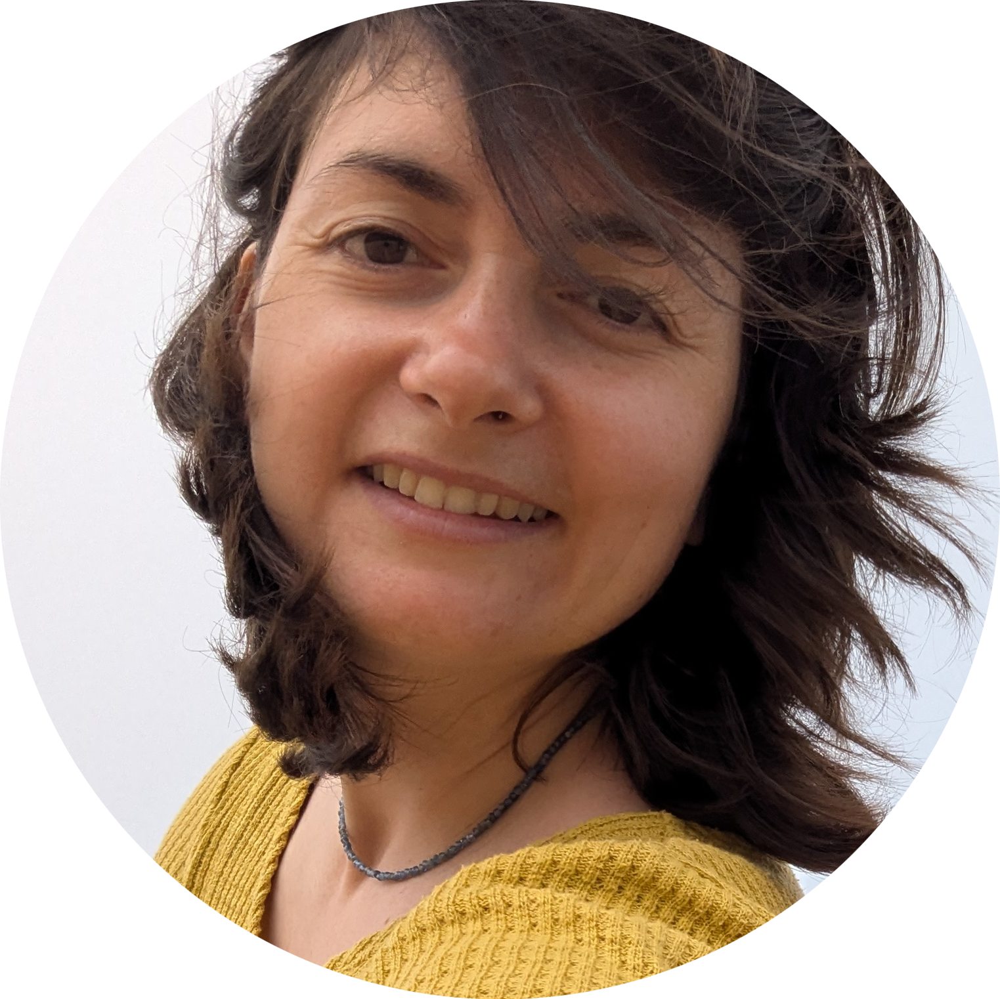

Я сопровождаю людей в периодах перемен, эмиграции и внутренней перестройки — когда старые опоры уже не работают, а новые ещё не собраны.
Записаться на встречу →Мне важно не «исправлять» человека, а помогать ему лучше слышать себя, выдерживать сложные периоды и находить более ясные и устойчивые способы быть в своей жизни.
Я практикующий психолог с профильным психологическим образованием и опытом более 10 лет в сфере образования и работы с людьми в обучении и развитии.
Я живу и работаю в эмиграции и хорошо знакома с тем, как это — собирать новую идентичность, когда старая система координат больше не работает.
Моя работа — это разговор и исследование, в котором постепенно у моих клиентов появляется больше ясности, опоры и свободы выбора.
В терапии мы можем:
Я работаю в гуманистическом и гештальт-подходе. Это значит, что для меня важны живой контакт, уважение к темпу человека и внимание к тому, что происходит «здесь и сейчас».
Я работаю онлайн в индивидуальном формате. Сессия длится 50 минут. Мы можем двигаться в регулярном ритме или ситуативно, в зависимости от запроса.
Я не работаю как клинический специалист и не сопровождаю острые психиатрические состояния. Если в процессе становится понятно, что нужен другой формат помощи — я помогу сориентироваться и при необходимости направлю к коллегам.
Если вам подходит формат — можно написать мне пару слов о себе и вашем запросе.
Telegram: @olyagubina
Email: oagubina@gmail.com